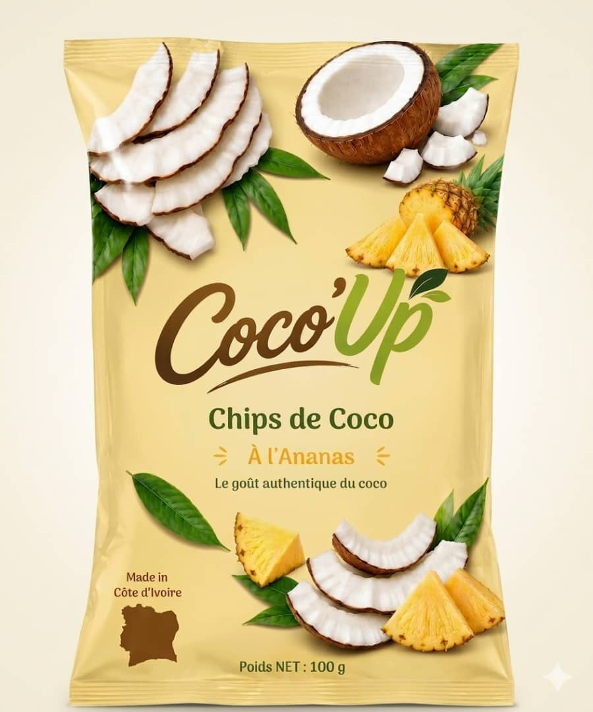

100% Naturel
Aucun conservateur, aucun additif.
Coco'Up
Bien plus qu'un snack : la noix de coco regorge de bienfaits naturels pour votre quotidien.

La noix de coco est naturellement riche en fibres alimentaires. Elles favorisent un bon transit, aident à la digestion et procurent une sensation de satiété durable — idéal pour un en-cas malin.

Les acides gras du coco (notamment les triglycérides à chaîne moyenne) fournissent une source d'énergie rapide et naturelle. Parfait pour un boost avant le sport ou un coup de mou dans la journée.

Chez Coco'Up, pas de conservateurs, pas d'additifs, pas d'arômes artificiels. Juste de la noix de coco fraîche transformée avec soin. Le goût authentique, rien d'autre.
Aucun conservateur, aucun additif.
Aide à la digestion et à la satiété.
Un boost sain à tout moment.
Chaque achat soutient les producteurs ivoiriens.
Commandez vos chips Coco'Up et savourez le coco autrement.
Commander sur WhatsApp